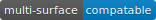
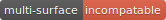

3. Files¶
This page will go over all the files and their contents.
If you need help reading these documents, the help document is here.
3 - Contents¶
File Contents (in alphabetical order):
3.1 launcher.py¶
The launcher.py file will launch the game.
3.1.1 Functions¶
-
main()¶ When run,
mainwill use the options fromsys.argvto run the launcher in a command line fashion.Help with the command line can be found by running
Windows
py launcher.py --helpOther
python3 launcher.py --help
3.1.2 Classes¶
-
class
launcher(mode, log_file, info_file, initial_gui=False, run_with_errors=True)¶ -
mode¶ The mode defines what mode the game is running in. This may allow or block certain features.
Warning
In Alpha 0.3.0 The only supported
modeis1.Mode Description Supported in 0 Consumer mode NOT SUPPORTED 1 Developer mode. Certain features enabled. >= v0.1.0-alpha 2 Cheats mode. all dev mode cheats enabled NOT SUPPORTED -
log_file¶ The launcher will send all the logs to a file with this name. The location of that file will be in the installation location
-
info_file¶ The launcher will search the
ssndirectory inside the current directory (./ssn) for a file with the name of info_file
-
initial_gui¶ True : When the launcher is loaded, it will create a gui.
False : When the launcher is loaded, it will prompt the user in the terminal for a yes or no answer, whether to launch.
-
run_with_errors¶ True : The launcher will loop, even after the program has hit a critical error. It will also log information on the error.
False : The launcher will
exitwhen it hits a critical error, and it will not log the error that was hit.
-
try_launch()¶ reloads the import of the runtime module, and attempts to call the runtime.main method.
-
load()¶ If
launcher.initial_gui, it runs the launcher gui, and executes different methods according tolauncher.modeElse, (
launcher.initial_guiis False) it asks the user if it would like to launch, through the terminal/command prompt. Afterwards, it executes the same methods as iflauncher.initial_guiwas True, accroding tolauncher.mode
-
waiting_loop()¶ Runs the tkinter mainloop.
-
get_game_file()¶ Searchs
./ssnforself.info_fileand lods it into memory.
-
log(msg, level="INFO", user="LAUNCHER")¶ Uses python’s logging module to write to a log file, formatted as follows:
[user][level]:msg
-
module_checklist()¶ Tries to import all the modules in
requirements.json, according to the mode."vanilla"if the mode is 0 or 2."dev"if the mode is 1 (developer mode).
-
do_checks()¶ Executes certain methods according to mode
-
3.2 runtime.py¶
The runtime.py file is the main file of the game. It consists of all the core game classes, and one function : main .
3.2.1 Functions¶
-
main(parent) main forwards all the options from the parent object to the game_kernel class, and runs it.
parent :
Please refer to the launcher.launcher for a documentation on what this parent object should consist of. The parent must consist of (at least) a log method, mode int and run_with_errors boolean.
3.2.2 Classes¶
-
class
font_collection¶ Loads and contains fonts.
-
add(name, filename, size)¶ Adds an attribute to itself with the name as
name, the font file fromfilenameand the font size fromsize.
-
-
class
audio_manager(parent)¶ Contains and manages audio. Requires a parent, which must be in the template of game_kernel.
-
log(msg, level="INFO", user="AUDIO")¶ Forwards input to the parent’s log method.
-
mute()¶ Stops all music and sets
audio_manager.mutetoTrue.
-
unmute()¶ Sets
audio_manager.mutetoTrue. IT DOES NOT RESUME ANY MUSIC THAT WAS PLAYING WHEN LAST MUTED
-
play_and_load_music(filename, loops=0)¶ If not muted, it loads
filenamefrom the current directory, and the plays it forloopsamount of loops (-1 loops to play infinitly)
-
load_audio()¶ Does nothing, currently.
-
-
class
new_player(name, parent)¶ The player manages its own collisions, possesions and movement.
-
check_movement()¶ Checks if the movement keys are pressed. If so, it then proceeds to check if the attempted movement has any collisions. If everything checks out, it adds the movement to the player’s current xy coordinates.
-
check_collision(xoff, yoff)¶ checks if the player’s current coordinates added with the xoff and yoff collide either into the edge of the chunk, or the edge of a chunk_object. If so, it returns the position the player will stop at, if not, it returns the new position of the player.
-
class
possesions_class¶ This class contains all of the player’s possesion utilities. From minerals to items, it does it. It is initialized as
possesionsin the game_kernel.minerals : A dictionary of all the minerals the player has. All the keys are the names, and the values are item_manager.mineral_counter ‘s.
-
give(item_type, obj, quantity)¶ The item type tells the method what to do with the information given.
item_type Desc. 0 minerals For minerals:
obj: must be a item_manager.mineral_counter .This method will add to an existing
mineral_counterthe quantity or create amineral_counterwith the quantity provided.Example:
# We're assuming that item_manager is already defined. # If you wish to learn about it, it's easy to find its documentation by typing its name into the search bar. (item_manager) player.possesions.give( 0, # minerals item_manager.minerals["mercury"], # selecting mercury from the item_manager's index 1 # quantity )
-
take(item_type, obj, quantity)¶ Please refer to new_player.possesions_class.give for information. Instead of adding the quantity, it takes away the quantity. All checks to see if there is in fact an
objto take away must be done before this method. For this method will not check that, and consequently hit a criticalKeyError.
-
-
give_all(quantity=999)¶ Gives the player
quantityamount of each mineral. Used for developement only.
-
-
class
runtime.gui(parent)¶ Manages anything to do with the display. To get to the window, you must go through this class
-
parent¶ Must be a game_kernel
-
screen¶ A pygame surface. Dimensions: (600,600)
-
check_events(keybindings=True)¶ Checks pygame events, to keep the operating system happy. Additionally, if keybindings is
True, it will check all the keybindings inparent.key_bindingson apygame.KEYDOWNevent.It will also check through the gui’s custom_events property (
dict). The key is the event, and the value is the callback. For more info go to runtime.gui.add_event‘s documentation.Just recently, this method also resizes the display on
pygame.VIDEORESIZE
-
load_cursors()¶ Adds all of the images in
./images/cursorstoruntime.gui.cursorsdictionary. The key is the name of the file (minus file suffixes) and the value is thepygame.image.loadobject of the image.
-
update()¶ Blits its screen property to the center of the ACTUAL pygame display. This is so the user can resize the pygame display window, and the game’s width will remain the same. This also allows room of styling outside the game window.
-
set_cursor(name)¶ Sets the
runtime.gui.cursortoruntime.gui.cursors[name].
-
add_event(t)¶ -
t¶ Must be a
tuplein the format:(pygame event, callback)
Note
The callback will be supplied with an event object
Adds event to
runtime.gui.custom_eventsExample:
def check_mouse(event): if event.button == 5 or event.button == 4: print("Scrolled!") pass gui.add_event( ( pygame.MOUSEBUTTONDOWN, check_mouse ) )
-
-
load_chunks()¶ Warning
This method will only work in developer mode, and does not serve its full purpose. Instead it simply loads a predetermined chunk from an image.
Loads chunk file.
-
-
class
item_manager¶ Manages items.
-
minerals¶ dictionary of all minerals, returned by item_manager.load_minerals
-
class
mineral_counter(obj)¶ Grabs the
nameandcolorproperty fromobj, and the adds its owncountproperty
-
-
class
sword_crafter(parent, dimensions)¶ sword_crafter is an autonomous object that will start when
sword_crafter.runis called. Essentially, it takes over the gui display when it’s running. The sword crafter is used to edit the user’s sword in a friendly environment.Warning
The surface of the sword_crafter cannot be customized. Since it takes a parent argument, it feeds all of it’s gui output directly to
parent.screen.-
check_mouse(event)¶ Run a couple of the sword_crafter’s children’s check_mouse methods.
-
try_save(status)¶ If status, run sword_crafter.save_weapon . It should be noted that the status parameter is coming from a confirm box.
-
load_popup()¶ Shows popup window. This is a method for the purpose of being a callback. To some button.
-
ask_loop(question)¶ Takes over the main loop for a while, to wait for user response of
question. This message usesguiObjects.ask_window.
-
show_conf()¶ Creates a certain confirm window in the center of the runtime.gui.screen .
-
exit()¶ Sets the
loopingproperty toFalse, therefore ending the sword_crafter.run loop without exiting.
-
run()¶ The run method is split into two sections: setup and loop.
Though the class already has an
initmethod, there is still setup that may only be done when therunmethod is called. After the setup, a loop is run whilesword_crafter.looping.
-
save_weapon()¶ Since Sword Smith Now is having trouble with encryption modules, so we are forced to just save the files in the png video format (0 security preveting game hacking...)
-
-
class
game_kernel(parent, dev_window=None, mode=0)¶ Warning
In Alpha 0.3.0 dev mode is the only mode supported. Please refer to launcher.mode.
This class serves as the parent class, and manages all of the other classes, as the name suggests. This is also where the main game loop is stored and run.
-
parent¶ This must fit the critera of launcher. Usually this parameter is supplied by the main function.
-
log(msg, level="INFO", user="GAME")¶ Forwards log input to
parent.log(launcher.log)
-
kill_sound()¶ Mutes its audio manager. (audio_manager.mute)
-
pause(gui=True)¶ Sets
pausedtoTrue. (Whether gui isTrueorFalse)Additionally, if
gui == Trueit will take over the loop of the game, and run its own while loop. It will display a pause screen, with some buttons.
-
unpause()¶ Sets the
game_kernel.pausedtoFalse. As of now nothing special, but there may be additions in regards to resuming processes, in the future.
-
start_crafter()¶ As long as the player has minerals (player.possesions.minerals) it will create a sword_crafter object and run it .
-
toggle_pause()¶ Inverts the current state of pausing. If the game is paused, it calls game_kernel.unpause. Vice versa it calls game_kernel.pause with the default arguments.
-
pause_quit()¶ Sets all of the
game_kernel‘s looping variables to a value that will make the game stop. (Essentially this stops the game from looping, without exiting python3)
-
quit()¶ Stops the game from looping, and exits pygame, not python.
-
init_credits()¶ Displays the pre-game credits, in a finite (set) amount of time.
-
run_start()¶ Displays the start page. Has its own loop. It will also play the start page music.
-
realm_explorer_init()¶ Sets the current chunk, for starting the game. At the moment it only runs in Developer mode, and it doesn’t do any processing to set the current chunk. It simply selects the first chunk out of
runtime.gui.chunks.
-
run_realm_explorer()¶ This is the main game loop. Essentially, this manages the game during gameplay. It checks all the events, sound, player movement, etc.
-
3.2 guiObjects.py¶
Danger
guiObjects is a very unorganized file that will probably be restructured by Beta, so don’t count on it being the same then.
guiObjects is a file containing all the window related gui classes/widgets.
3.2.1 Classes¶
-
class
ask_window(parent, screen, background_img, qtxt)¶ - 
ask_window should be used by functions such as sword_crafter.ask_loop, since they will handle the game loop.
When shown, the ask window covers the entire screen, which is why it should have its own loop.
-
parent¶ should have the same gui related properties as sword_crafter
-
screen¶ Should be a pygame surface. (This should probably be runtime.gui.screen)
-
background_img¶ Should be a pygame surface. The ask window wil blur this surface using a PIL filter, and then render it behind the popup window.
-
qtxt¶ A string that will be rendered by a font, as the question.
-
check_keys(e)¶ e : pygame.event object, the key kind.
Checks if allowed characters are pressed. If so, append them to
ask_window.text.
-
update()¶ redraw the display.
-
check_events()¶ A custom version of runtime.gui.check_events, with keypress.
-
draw()¶ Draw its surface to the main display.
-
-
class
confirm(parent, surf, rect, msg, onclick)¶ - 
Danger
THIS CLASS CAN ONLY BE USED WITH sword_crafter
Essentially a confirm popup.
-
parent¶ must be a sword_crafter.
-
surf¶ The main surface. (should be runtime.gui.screen)
-
rect¶ Works in regularly compared to pygame and tkinter rectangles. (x,y,width,height)
-
msg¶ The question that will be asked.
-
onclick¶ The callback for the user’s answer.
Note
The onclick callback will be supplied with one parameter : True or False. Depending on the user’s descion.
-
clickT()¶ Calls the callback with
Trueas the parameter.
-
clickF()¶ Calls the callback with
Falseas the parameter.
-
check_click()¶ Check if the user has clicked on any of the buttons.
-
update()¶ Redraw to its own surface
-
draw()¶ Draw the object’s surface to the main surface. (
surf)
-
The surface where the button will be drawn.
The background color of the button. (Should be in rgb format
(R,G,B)).
The callback run, when the button is clicked.
If supplied, it should be a
pygame.font.Font.renderobject. This will be displayed on the button.
The color the button turns when hovered over. (RGB format)
options:
"center","left". The text will be positioned according to this parameter.
The amount of pixels add/subtracted from the text’s calculated position.
Warning
padding is an unstable feature, and is recommended not to be touched. However, it is not deprecated, and still in use.
Extra text that will be rendered from the right and out. Should be a
pygame.font.Font.renderobject.
The offset surf is from the main surface. For Example, if a button was being draw on a surface that is not the main screen, it requires an out_offset parameter to tell it exactly where it is on the entire page, not just the surface it’s being drawn to.
Documentation unavailable.
Draw button to its surface (
surf)
If the mouse is hovering over the button, and there is a hover color for said button, change the background color of said button temporarily.
Returns
Trueif the mouse is hovering over the button. If there are issues with this method, refer to button.outer_offset for a possible reason why.